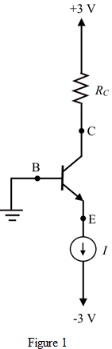

Step 1:
Refer to the circuit diagram of common emitter amplifier in Figure 6.67 (a) in the text book.
Draw the DC equivalent circuit of the circuit.

Step 2:
The input resistance of an amplifier is matched with the source resistance.
The emitter resistance is,

The emitter current is equal to the DC current .
.
Write the expression for the emitter resistance.
Substitute for
for  and
and  for
for  .
.
Therefore, the value of current  is .
is .
Step 3:
The maximum base emitter voltage is,
Substitute for .
.

The collector emitter voltage  is,
is,
…… (1)
Step 4:
Write the expression of  .
.
Simplify further.
 …… (2)
…… (2)
Step 5:
Equate equation (1) and equation (2).
Simplify further.
The value of resistor cannot be negative.
Therefore, the value of resistor  is.
is.
Step 6:
Determine the value of input voltage of amplifier.
Use voltage divider rule to calculate the input signal.
Substitute for,  for
for  and
and  for
for .
.
Step 7:
Determine the value of output voltage.
Determine the overall voltage gain.
Therefore, the overall voltage gain is .